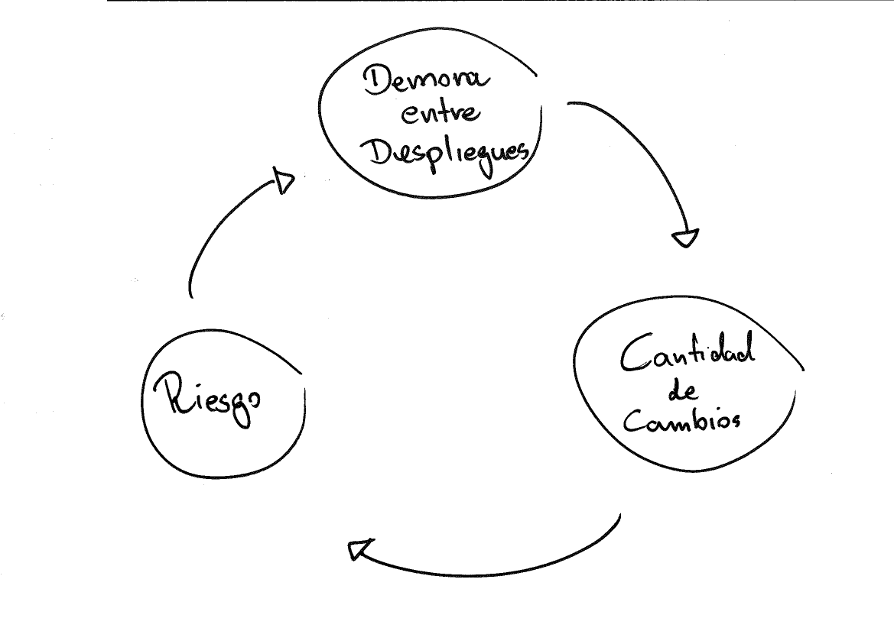
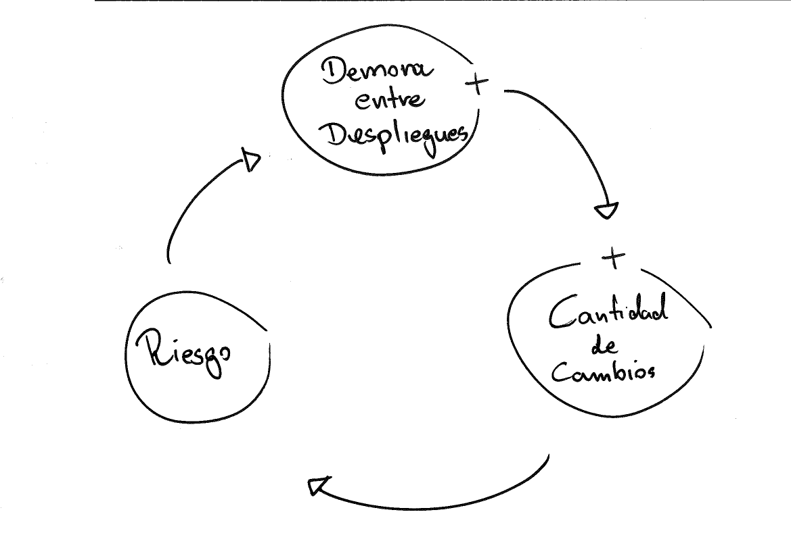
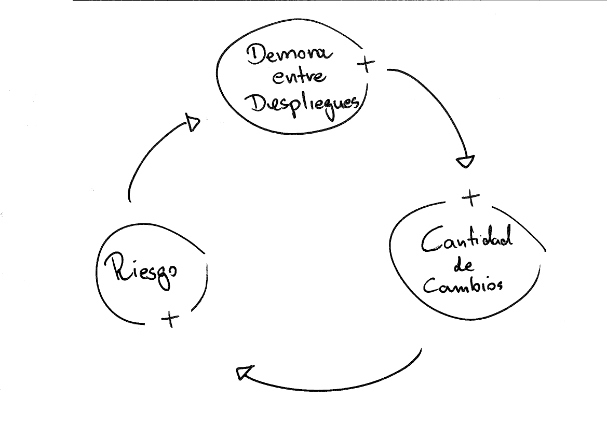
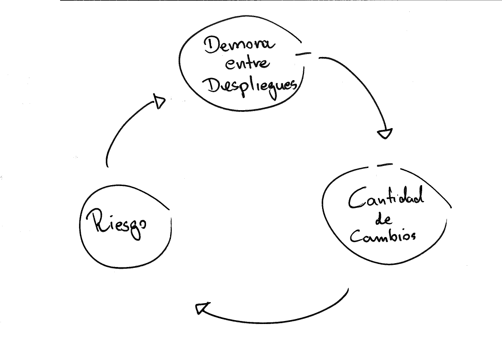

a reducir riesgos
(y como hacerlos?)
Una pequeña historia de la vida real
con buses de línea
a mi casa
pero a (muchas) veces se retrasa
y a veces tienen pocas líneas
si tenemos un problema en el motor, muchas personas no van llegar donde quieren
las personas van ser agregadas al próximo bus
hablamos de computadores
a su "casa"




(No mas buses…)
Envio:
Reviso y arreglo:
No vas a mirar bien los problemas en el camino
Puede ponerse en mas riesgo
Se queda sin aire
No vas mirar bien los problemas en el camino
Puede ponerse en mas riesgo
Se queda sin aire
Es posible eligir no subir en el deploy de las 8AM
Mas algunos minutos y toma el deploy de las 9AM
Podemos enviar enviar cambios pequeños y probar como es el comportamiento en producción.
Si tengo un problema en producción, puedo simplemente hacer mas un deploy
hotfixhotfixeshotfixes, como utilizamos todo los diasEs posible escribir codigo, ponerlo en producción, pero no disponibilizar para el usuario
Feature Toggles) en código para definir el flujoFeature Toggles) en código para definir el flujoFeature Toggles) en código para definir el flujoVariables del deploy
Bruno Tavares